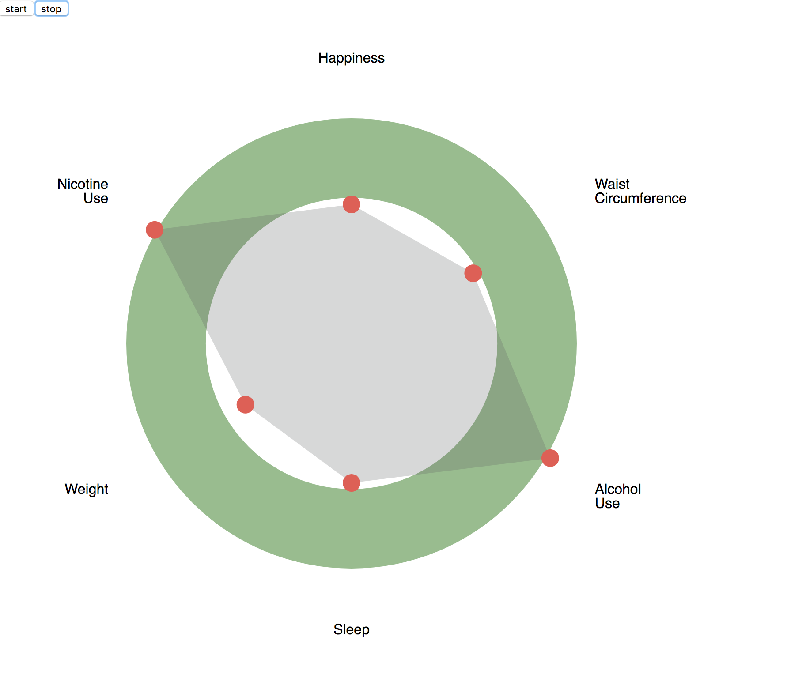

hGraph V2.0
Developed with the same premise as hGraph V1.0 but implemented through React. For more information on the hGraph project, please go to hGraph V1.0. Since, hGraph V1.0 was implemented in Javascript and Node.js, updates to hGraph required the whole application to refresh. Through React, updates to the graph are automatic and do not require refreshing the page. hGraph V2.0 also has more transition animations, is modified for mobile, and can show multiple graphs through overlays. hGraph V2.0 prompts the user for various datapoints and is slowly progressing to a conversational application.
For further updates, follow the Github Repository.